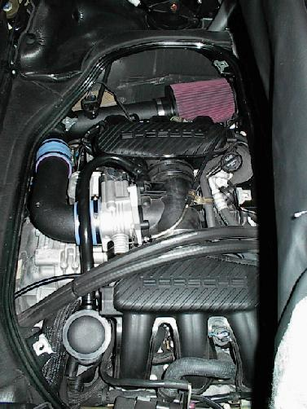
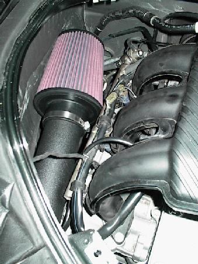
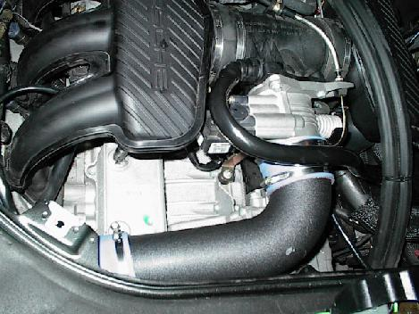

Powerflow is a replacement for the stock air intake box/pipe that allows more air to get into the engine thus giving it more power. Performance increases are advertised as about 10 more hp at the rear wheels and 10 more ft/lbs of torque. There's been much discussion about Powerflow in the Boxster Board so an archive search might be useful. More information about Powerflow can be found at www.powerflow-inc.com. I had it installed Oct 28, 1999 by a mechanic in the local area. I'm happy to report that I enjoy the Powerflow for two reasons: it enhanced the sound of the engine and it gave me more *perceived* low end torque.
Advertisements for Powerflow imply that it is easy to install. I have tried to install it myself and found that not to be the case; this may be no surprise because I don't have much engine experience nor do I have the right tools. I had it done by a local mechanic and watched closely as he did the job. I removed the engine compartment lid and driver's side air scoop for him (because I can do it quickly). I then watched nervously as he removed the driver's intake manifold and throttle body, etc. It took about 1.5 hours to remove the stock airbox. It then took about 15 minutes to install the Powerflow intake and another 10-15 minutes to put everything else back together and double check for anything undone (reconnect hoses, etc.)
I started the engine and immediately heard a different intake sound -- a faint hissing sound coming from the driver's side air vent. The hissing sound is the sound of the engine breathing (it is barely noticeable -- except for people like me with very sensitive ears). As I pulled out of the garage driveway, I quickly noticed the reduced tendency to stall . On the highway on the way home, I tried out the usual 4200rpm and 5200rpm gearing and found a more pronounced throatty sound at 4200rpm and a louder 5200rpm roar.
As I've gotten more miles on the Powerflow, it seems to have gotten quieter. There is still enhanced sound but it is not loud enough to startle me as it did in the beginning (perhaps it's because I'm now used to it).
Here are more pictures below.
A shot of just the conical filter on the end of the intake pipe

Shot of where the Powerflow intake inserts into the throttle body

The Powerflow is held in place using one of the bolts that held the stock air intake box in place. Also, note the MAF (Mass Air Flow) sensor is now inserted into the Powerflow pipe.
Will this void your warranty? This was a big question for me.
In fact the first time I ordered the Powerflow, I asked my dealer to install
it and they freaked out thinking that it would void the warranty -- so
I returned the Powerflow. After a few weeks, I asked again about
Powerflow and the folks at Zucz Performance sent me some information that
convinced me that the warranty would not be voided since Powerflow does
not involve going into the engine. In fact one Boxster Board participant
has indicated that he had an engine replaced in which he had already installed
a Powerflow and new exhaust and they did not say anything about it.
So I ordered it again and the Zucz Performance folks helped me locate
a mechanic that would install it for me.
After about 150 miles with the Powerflow, I opened the engine compartment and with a flashlight, inspected for leaks, or anything else out of the ordinary. Nothing was wrong. I continue to get used to the sound and get just a little more enjoyment out of the car. (posted 11/1/99)
Note that about July 2001, I had the Powerflow removed because I think the MAF was damaged by too much oil on the filter (when I cleaned/reoiled it). It cost me over $500 to remove the Powerflow and reinstall the stock airbox and plenun (including new MAF). I was not happy. But I do love the stock exhaust sound which is back. (posted 3/12/02)